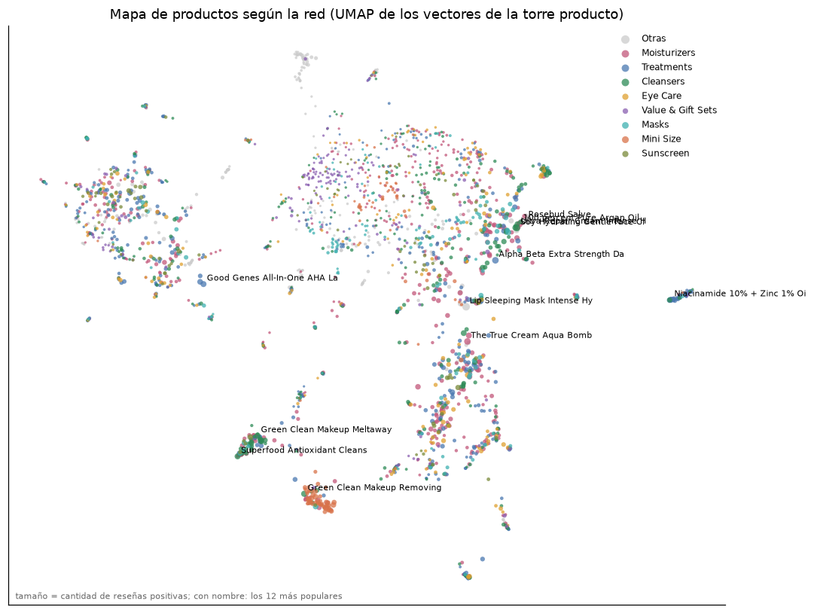

01 Casi todos son nuevos
Los recomendadores clásicos aprenden de tu historial: lo que compraste, lo que reseñaste. Pero en skincare, la mayoría de la gente aparece una sola vez.
Para esas personas no hay historial del cual aprender. Lo único que sabemos es su piel. Ese es el problema del cold start, y es el centro de este proyecto.
Y hay un segundo problema: los tonos de piel no están representados por igual.
Los tonos claros y medios son más de 300 mil personas. Deep, rich, dark y ebony, juntos, apenas 10 mil. Un modelo entrenado con estos datos podría aprender muy bien lo que les gusta a las mayorías y mal lo que les gusta a los demás. Por eso, todo el proyecto mide los resultados por tono de piel, agrupados en cinco grupos: claro, light, medio, tan y oscuro.
02 Dos torres
El modelo es una red neuronal two-tower, la misma familia de modelos que usan YouTube o Google Play. Una torre convierte a la persona (su tono, tipo de piel, ojos, pelo y, si tiene, lo que le gustó antes) en una lista de 128 números. La otra torre hace lo mismo con cada producto, a partir de su marca, categoría, precio, ingredientes y etiquetas como "Best for Oily Skin". La red te recomienda los productos cuya lista de números se parece más a la tuya.
Pero una red neuronal no vale nada si no le gana a algo más simple. Antes de entrenarla ajusté con cuidado cuatro modelos de referencia: recomendar lo más popular, lo más popular entre personas con tu misma piel, una factorización de matrices clásica (ALS) y un híbrido que predice tus gustos desde tu perfil.
03 ¿Le gana?
Lo evalué en datos que ningún modelo ni ninguna decisión había visto: escondí productos que le gustaron a cada persona y medí qué proporción quedaba en su top 10 (recall@10).
Para una persona nueva, la red gana: acierta el 10,2% contra 8,9% del mejor modelo simple, un 15% más. Y el resultado de la red se reproduce casi exacto entre validación (10,3%) y test (10,2%). Con historial, empata con el ALS (15,2% contra 15,0%). Cuando ya sabemos qué te gustó, eso dice casi todo.
Recomendar al azar daría 0,4%. Las diferencias de la red contra el mejor modelo simple son +1,3 ± 0,3 puntos (persona nueva) y +0,2 ± 0,3 (con historial, no significativa).
04 ¿Qué aprendió?
Para entender de dónde sale la ventaja, re-entrené la red sacándole una pieza por vez y medí cuánto empeoraba. Cambiá de escenario:
Cada pieza tiene su escenario. El perfil de piel solo importa cuando no hay historial: sin él, la red le recomienda lo mismo a todo el mundo. El historial es, por lejos, lo más importante cuando existe. Y la información de los productos (ingredientes, marca, etiquetas) es exactamente lo que le permite a la red alcanzar al ALS: sin ella, cae a su mismo 16,9% en validación.
Un detalle práctico: sacarle el "ID" a cada producto casi no cambia nada. La red puede recomendar un producto recién lanzado, que nadie reseñó, solo por lo que es.
05 ¿Y para todos los tonos?
La red no deja atrás a ningún grupo de tono: en test, para personas nuevas, mejora a los modelos simples en los cinco grupos; con historial, empata o gana en cada uno. Pero la pregunta más interesante es a quién le sirve que la red conozca su piel. Comparé la red completa con la red sin perfil, para personas nuevas:
A todos les sirve, pero al grupo oscuro le sirve más que a nadie (+3,7 puntos). Tiene sentido: sin perfil, la red recomienda lo popular, y lo popular está dominado por lo que les gusta a las mayorías. Contarle tu tono es lo que hace que la recomendación sea para vos.
06 El dato raro
Había algo que no cerraba. La red acertaba muchísimo con tres tonos chicos: porcelain, olive y dark. Su recall rondaba el 50%, contra el 15% del resto. ¿La red las entendía mejor? Miré qué reseñaban.
Las personas de esos tres tonos reseñan casi siempre los mismos productos, y casi todos de dos marcas: Caudalie y KORRES. En los demás tonos, los 10 productos más reseñados son apenas el 8% del total. Lo más probable es que esas reseñas vengan de un origen distinto (por ejemplo, campañas de alguna marca), no del formulario general.
La red aprendió ese patrón y "acierta". Pero no está personalizando para pieles oscuras: está repitiendo un artefacto de cómo se juntaron los datos. Es el hallazgo que más me importa del proyecto: una métrica alta en un grupo chico puede esconder un sesgo. Hay que mirar qué se recomienda, no solo cuánto se acierta.
07 Más variedad
Otro problema: para personas nuevas, la red recomienda apenas 67 productos distintos a 16 mil personas, casi todos superventas. Probé restarle puntos a lo popular al momento de recomendar, sin re-entrenar nada:
Hay variedad casi gratis: con una penalización chica, la red muestra 40% más productos distintos sin perder acierto. Con una un poco mayor, el doble de productos, y todavía le gana al mejor modelo simple. Pasado cierto punto, se rompe: empieza a recomendar productos que casi nadie probó.
08 El mapa
La red ubica cada producto en un espacio de 128 dimensiones. Aplastado a dos (con UMAP), así se ve el catálogo según la red:

Los colores están mezclados: la red no organizó el catálogo por tipo de producto. Lo organizó por marca. Los vecinos de un producto comparten su marca 34 veces más de lo que daría el azar. La gente arma rutinas de marca: a quien le gusta una crema de Drunk Elephant le suele gustar el limpiador de Drunk Elephant. Nadie se lo dijo a la red; lo aprendió de las reseñas.